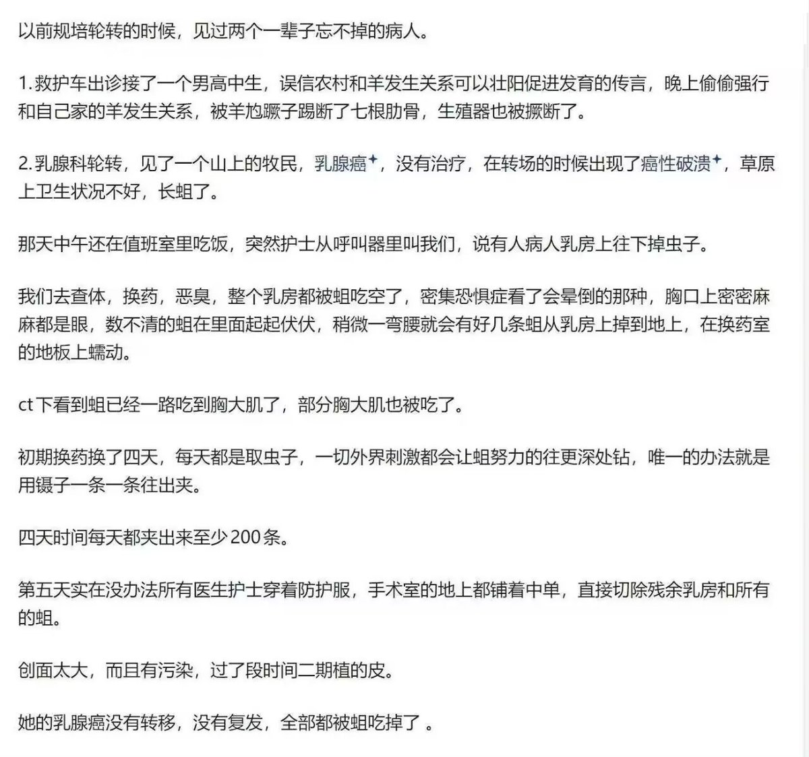

STRIDSFORDON 9040C “Ljusdimma” 🏳️⚧️
@Strf_9040C
从生物学看，蛆只吃坏死组织而不吃活乳腺癌的活细胞实质瘤，无法根治癌症
CT很难清晰分辨蛆虫侵及的边界，更不可能判断“正在吃”的过程
从感染病理看，如此大面积的破溃生蛆、深及胸大肌，必然在数日内引发脓毒血症和感染性休克，患者根本不可能存活到接受乳房切除和二期植皮，更不可能“癌症被蛆吃好了

神楽坂 幻蝶纯梦🍥(互fo版)
@raotianshou
医学生已畏惧😭 https://t.co/2xWoSF0TY7